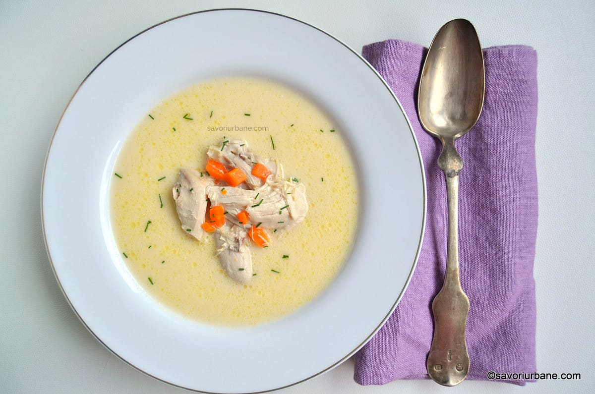

Hello, this is the ciorba radauteana recipe!
It will be in Romanian since this is a romanian meal.
Prep time:15 mins
Cook time: 1 hr
Total time: 1hr 15 mins
Ingredients
- 700g carne de pui
- 300g smantana
- 4 galbenusuri
- 2-3 linguri otet
- 2 radacini mici de pastarnac
- 2 cepe
- 1 ardei gras
- 1 morcov mare
- 1 legatura patrunjel
- 1/2 telina
- cativa catei usturoi
- foi de dafin
- sare
- piper
Preparation
- Am cumparat un pui intreg de vreo 1,3 kg. Am toaletat puiul eliminand puful si penele ramase si i-am decupat glanda de la tartita (fund). L-am transat in piese potrivite pentru aceasta ciorba radauteana. Am desprins mai intai aripile, apoi pulpele. Am taiat pe lung carcasa pe lateral (pe ambele parti) si am desprins spatele de piept. Am taiat spatele in 2 bucati pe lat iar pieptul in 2 pe lung. Am pastrat oasele si pielea. In total am obtinut 8 piese.
- Am curatat si spalat si zarzavaturile: morcovii, ceapa, patrunjelul, pastarnacul, telina si ardeiul. Le-am lasat intregi sau taiate in 2. Ele vor fi scoase ulterior din ciorba radauteana.
- In oala mare de supa (volum cca. 6 L) am asezat bucatile de carne de pui. Am pus apa rece pana aproape de buza (cca. 4 L) si 3 lingurite de sare. Am asezat oala pe foc mare si am asteptat sa ajunga la fierbere. Am cules spuma formata la inceput. Dupa un anumit moment nu se mai face spuma (cam dupa 15 de minute de fierbere).
- Am adaugat in oala zarzavaturile si piperul boabe. Am redus focul la mediu si am acoperit partial oala cu un capac. De-acum mai trebuie sa fiarba cam 45 de minute. Calculand si cele 15 minute anterioare inseamna ca o ora buna este suficienta gatirii carnii de pui. Pana acum reteta este similara cu cea a supei limpezi de pui in care se fierb taietei sau galuste de gris.
- In final am oprit focul si am strecurat supa. Lichidul fain si nutritiv s-a intors in oala iar carnea si zarzavaturile au ramas in strecuratoare la racorit. Ce bine miros! Zeama a scazut mult asa ca am mai pus 1 L bun de apa si am asezat din nou oala pe foc.
- Dupa ce carnea s-a racorit vreo 10 minute m-am apucat sa o dezosez. Treaba asta se face cu mana deoarece carnea pica singura de pe oase. Am indepartat si piele fiarta si am avut grija sa scot toate firicele gustoase de carne de pe oasele spatelui, gat si aripi. La pulpe si piept e usor: se desfac cu mana in fascicule potrivite.
- Am tocat cubulete si 2 morcovi din 4. Puteti sa-i puneti pe toti daca nu aveti in plan salata a la russe.
- In final am pus in ciorba si carnea si morcovul tocate.
This should be the final result if you did everything in order:

{kind=link}
{kind=link}
{kind=link}
{kind=link}
{kind=link}
{kind=link}
{kind=link}
{kind=link}